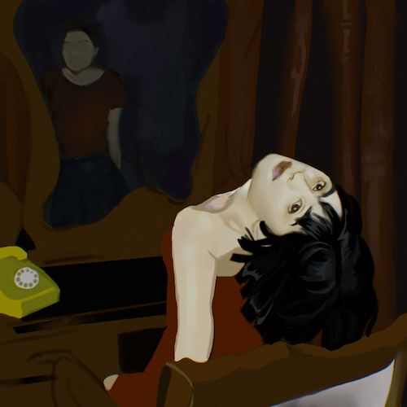
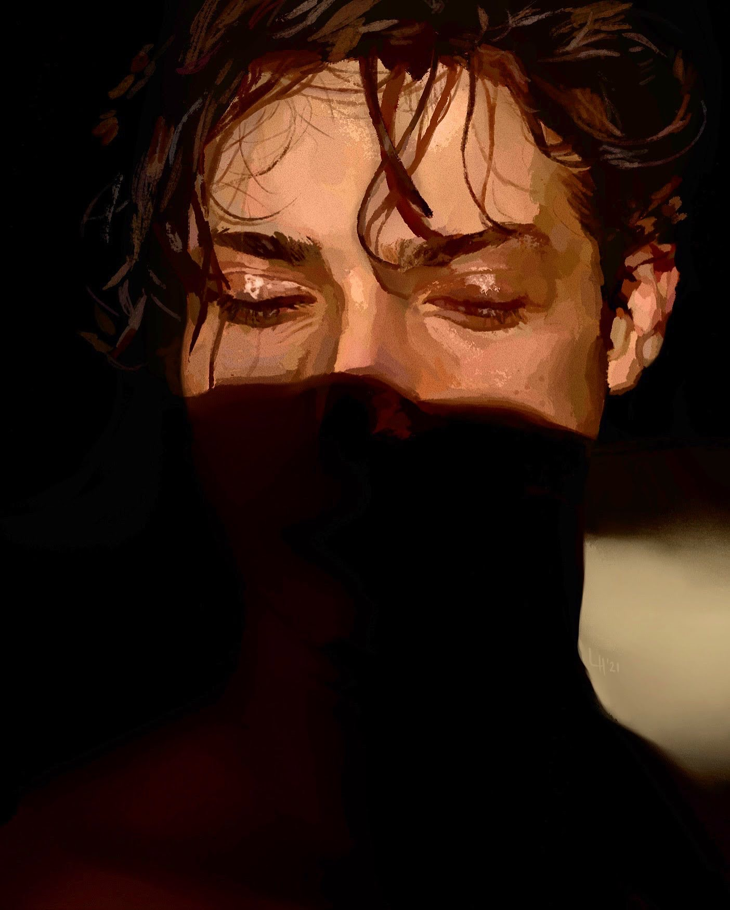
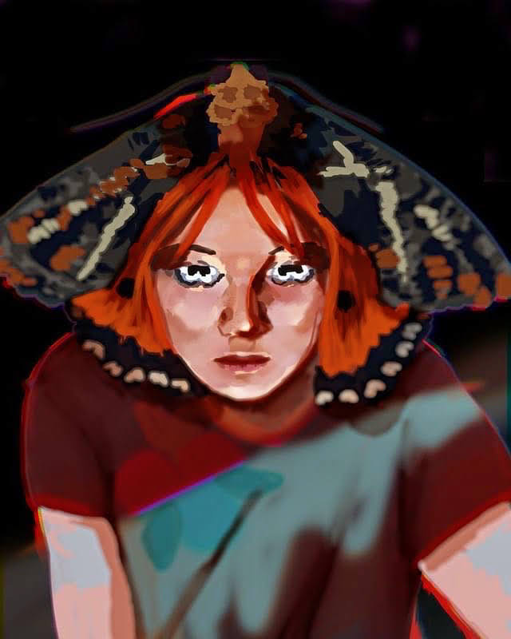

A gender dysphoria diagnosis never felt liek it fixed anything for me. I never felt man enough when I had bouts of dysphoria. It caused me anxiety, and I felt like I could not trust the reflection in my mirror.

For me, gender euphoria was the warm feeling I got whenever my preferred gender was validated. This image represents that with the soft lighting hitting the subject.

The right decision for me was letting go of my old identity to embrace my femininity. Moths are used to showcase the death of my past self.